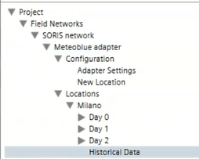
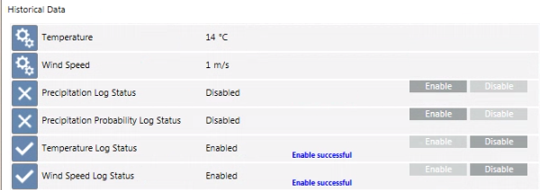

Enabling Weather Forecast Historical Data
You can enable the weather forecast historical records for historical, statistical, or graphical aims. To this purpose, you must activate the History Data object and then enable the monitoring of relevant properties. For background information, see Meteoblue Weather Integration.
- Desigo CC is configured to integrate a Meteoblue adapter.
- System Manager is in Engineering mode.
- System Browser is in Management View.
- Select Project > Field Networks > [SORIS network] > [Meteoblue adapter] > Locations > [location].
- Select the Extended Operation tab.
- The History Data property indicates
NotActivated. - Next to the History Data property, click Activate.
- The History Data property becomes
Activated. - Select [Meteoblue adapter].
- In the Extended Operation tab, next to the URL property, click Discover.
- The adapter configuration is refreshed with the updated data and the Historical Data object is activated and added to System Browser.
- In the Operation tab, the log status for the properties you want to monitor is
Disabled. 
- To enable any properties that you want to monitor: next to the log status property click Enable.
- The corresponding log statuses become
Enabled. After a while the corresponding properties appear at the top of the list with the current forecast value for that hour.
